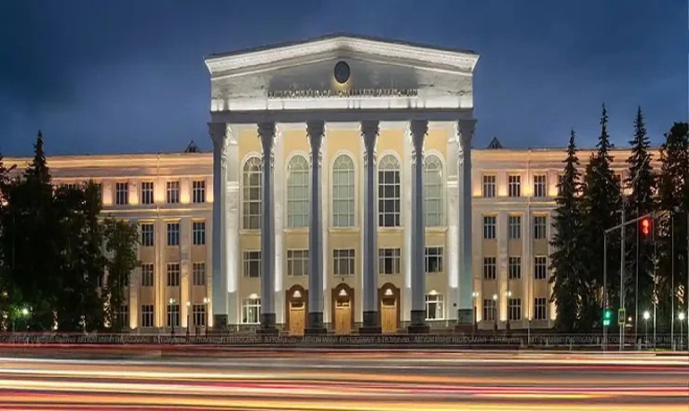

Study MBBS In
Russia
Russia is a fine place for students who would love to pursue MBBS. It's well-being and
quality of life attracts the students. The course duration in Russia is 5.8 years. MBBS
in Russia is considered as the best option for the students who want to study abroad.
The reason it is considered as the best option is the advantage of getting high-quality
education at an affordable cost. Russia medical universities are recognized by MCI, WHO,
UNESCO, etc. Students are keen to take admission in Russia, because of the Russian
service and the students who get mbbs admission in Russia are praiseworthy. Doing MBBS
in Russia is a great opportunity for the students. The Russian universities occupy the
top 30 in the ranking.
It is a dream of undergraduates to occupy their seats in top universities and become
specialists within 5.8 years of their study. Students from all over the world take mbbs
admission in Russia for their medical study. The graduates from Russia work in clinical
fields everywhere across the globe. These specific reasons attract the students to a
country like Russia. The Russian service and the training benefit the students in a
great extension and that helps them in their fruitful career. Russia is a common
destination for students to study MBBS. Other than Russia there are other countries like
China, Nepal, Germany, Philippines, Ukraine, Bangladesh and Kyrgyzstan. These countries
also provide an affordable course for students. Even though the duration of the course
is 5.8 years, the international students who opt to study in Russia are not needed to
undergo one year of the preparatory course.
More Information
About MBBS In
Russia
| Recognition |
NMC and WHO approved
|
| Eligibility |
50% in Physics, Chemistry and Biology Aggregate |
| Course Duration |
6 Years |
| NEET |
Yes , compulsory |
| IELTS/TOFEL |
Not Required |
| Medium of Teaching |
English |
About MBBS In
Russia
Pursuing MBBS from Russia is easy because students are not required to attempt an
entrance exam. Also, Russian government provides subsidies for education so that the fee
is comparatively low. Students can get medical insurance and medical treatment when
needed. MBBS is taught in English and Russian language. They also teach Russian language
to the students so that it is easy to communicate with the local patients. Russia has
advanced teaching in medical universities, and they have well equipped, streamlined
techniques for the development of students.
When we compare the climate of Russia with India, the climatic conditions of Russia are
quite different from India. As it lays in the torrid region, the climate is moderate,
which is comfortable for people living in Russia. The country has a very different
climate across that change based on geographical area. The average winter temperature
remains -20 degree Celsius, during fall and summer they change up to 25 degree Celsius.
Each house in Russia is fitted with a heating facility. So that it makes it comfortable
for individuals to stay indoors.
Why Study MBBS In
Russia
2023-24?
Russian medical universities are among the top universities of the world. They have the
leading hospitals and a globally recognized degree, furnished accommodation, Indian
mess, Advanced and affordable learning, quality education, etc. Russia is having the
most resourceful universities. And most of the universities are giving subsidized fee
structure. The need to seek after clinical instruction is the most significant expense
of a various sort of organization.
Indian students wanting to study abroad are at an all-time high. Today the world has
shifted to a high study parameter from choosing the right college, for studies that
yield maximum return on investments (ROI), global recognition and opportunities and
above all, the curriculum that is all-encompassing. The highlight is the Low cost of
living and the affordable MBBS in russia fees that make Russia a destination for MBBS
study among international students. Students can opt for scholarships as well. The
average fee for MBBS is between 2.5 lakhs to 5 lakhs. Another benefit for students is
after finishing their study they can practice anywhere.
Russia provides top-notch medical education and practical knowledge for students, which
is very useful. Also, students get good accommodation and quality food in the campus
itself. Every year, Russia is welcoming over 200,000 foreign students from across the
globe to study in the top medical colleges in Russia. It includes students who have
opportunities to study in destinations like the US and the UK but opt for Russia.
Because of its state-of-the-art infrastructure and the in-depth research expertise in
medicine.
The major reasons
to choose
Russia is:
-
The
quality of education they provide.
-
Very
affordable and advanced learning.
-
Russian
degree is globally recognized; therefore, students can practice wherever they
wish to.
-
The
course is recognized by MCI.
-
Students
get good and furnished accommodation inside the campus itself.
-
The
students who are from India feel at home because of the Indian mess the
universities provide.
-
The
subsidy is 70% for the MBBS courses in Russian Universities. The average MBBS
fee is between 2.5 Lakhs to 5 Lakhs per year.
-
MCI
Screening Test is provided by most of the Russian universities. Graduates show
excellent results in the FMGE exam as a result and land in the best hospitals
and industries worldwide.
-
Technically
Equipped Learning- Russia is known for the advanced medical universities.
-
Many
Specialization Course- Russian universities provide an ample number of courses
for students to choose and specialize.
-
MBBS
in Russia provides Goal-Oriented Learning.
-
Faculties
are highly skilled.
-
Russia
uses the latest teaching methods and technology.
-
Russia
has a proper Indian Hostel and Indian Food (Veg & Non-Veg) which is easily
available.
-
The
warden for boys and girls is separate and has complete security.
-
Campus
is ragging free.
-
Traveling
in Russia is comparatively cheap.
-
Over
1000 students study top medical colleges in russia.
MBBS In Russia For
Indian
Students
Choosing MBBS in Russia is a best option for students. The language test or entrance exam
is not required for admission in major. The profession opens the door for students who
want to explore Russia. There are over 4000 students who study in 20 colleges in India.
Compared to western nations, the sponsorships are relatively high. The tuition fee is
comparatively much less than other countries. The students don't need to attempt any
examination for admission; therefore, the admission process is extremely simple. The
IELTS language proficiency test is also not required. The curriculum of Russia is like
the one in India. Thus, students can return to India for their higher studies anytime.
Studying MBBS in Russia is a 6-year degree offered as a specialist bachelor's degree in
Medicine. It's growing as an alternative option for students who are dreaming to be
doctor’s but could not secure admission in a good Indian medical college. Over 53
Russian universities offer an MBBS degree which is approved by the Medical Council of
India (MCI) and it allows the students to finish their MBBS abroad and practice in
India.
According to MCI rules, students who want to study MBBS abroad must have to qualify for
NEET exams of the Russian colleges. But the students must have at least an aggregate of
50% (in PCB) or more in their CBSE/ISC 12th results. The tuition fees in popular
universities range between 193,000 to 874,000 Russian Rubles. It differs from Indian
fees. It is between 1.8 lakhs to 8.5 lakhs a year. For legally practicing in India the
Graduates have to go through the Foreign Medical Graduates Examination (FMGE). Now,
because of covid-19, all the classes are conducted online. But if the students are going
to Russia, they could work part time as well. Russia is rising from the ladder of their
study in the medical field.
In Russia MD is the same as MBBS in India. The only difference is in nomenclature. The
Medical Council of India is known that MD in Russia is a bachelor level degree program.
After completion of MBBS in Russia, students will get the license to practice in India.
The bachelor's degrees in the universities in Russia are only awarded in nursing. If one
wants to become a practitioner, a specialist degree is required, which is lasting for
5.8 years. After that specialization, residency is required that lasts for an additional
2 to 4 years.
Advantages Of
Studying MBBS In
Russia
-
There
is no need for an entrance exam and no donation.
-
The
admission procedure is simple.
-
The
fee is very low and subsidized and affordable compared to other countries. It is
between 4 lakhs to 8 lakhs for a year. More than this, the cost of living is
economical.
-
The
degree has worldwide acceptance.
-
It
has a European standard of living.
-
Indian
mess is available.
-
There
is Excellent Result in MCI Screening Test: so that the students studying MBBS in
Russia get trained for MCI Screening Test, and they get to practice in India
with no additional cost
-
The
Reference Available of Students working in Hospitals Across the World.
-
There
is 100% Guarantee for visa.
-
Universities
are Government Universities of Russia
-
Students get Opportunity to get Dual Diploma :
The students have signed the Bologna declaration, so that the students
who want to study medicine MBBS in Russia get dual diplomas through their joint
program with other universities in foreign countries.
-
It will be Easy for International Students to Adapt
: Russia is a home to people who speak over 100 different languages.
Russia attracts students from all over the globe. The students who choose to
study MBBS in Russia get a diverse taste, and a multicultural environment.
-
The course in Russia is Advanced and Comfortable :
Russia is standing with top western universities in terms of their
advanced equipment, scientific centers and high-quality of their study
facilities. More than this, Russian Universities offer very low-cost
accommodation.
-
Russia has a Top-notch infrastructure :
Russian universities are providing students with modern equipment and
with top facilities.
-
Russia offers Scholarship Opportunities :
Russia provides several free tuition opportunities and scholarships to
students from abroad who wish to study MBBS.
-
The course can study in English : Study
medicine in Russia is a good option for Indian students because most
universities use English to teach.
Cost of Study For
MBBS In
Russia 2023-24
The Low-cost MBBS in russia fees, and affordable living costs, attract more and more
Indian students to study MBBS in Russia. Russia is a very demanding destination for
students to study MBBS. The Russian government has subsidized the fee structure that
makes the course very cheap. Pursuing MBBS from Russia is considered easy compared to
other countries. The study cost is very affordable. Universities in Russia offer a
smooth platform to international students, so they don't have to pay the high tuition
fees. Other than this, there is no donation. The cost to complete a six-year MBBS is
budget friendly for students.
Food and
Accommodation Cost
The food charges are also included in the hostel fees. 2-3 beds are provided for students
in a sharing room. For foreign students in Russian medical Universities accommodation
facilities are provided. The university hostels provide all the facilities like bed,
blanket, bed sheets, pillows, table, and cupboards etc. There will be a common kitchen
and washing machine rooms for students. Students can use the kitchen to cook Indian
food. Also, there are messes available which provide Indian foods too. There were Indian
restaurants which are within a walking distance from some universities. To experience a
cultural variety of food, there are native cuisines and all other countries dishes
available.
Living Cost
Living cost is also comparatively low, considering other countries. Life in Russia is
comfortable for all expenses such as groceries and other bills being very fair even in
major cities like Moscow. Outside the major metropolitan areas, prices are cheaper, with
low bills for food and transportation. Staying in a hostel is better for students
because it includes the food cost as well. Therefore, the students won't have to spend
extra money. Also, the students could do part-time jobs in their free time.
| Particulars |
Average cost in USD/Month
|
USD/Month Average cost in INR/Month
|
| Accommodation cost |
$150 - $200 |
12,000 – 16,000 |
| Food |
$100 - $110 |
8000 - 8800 |
| Transport |
$10 - $15 |
800 - 1200 |
Note :
Traveling Cost
Students can use public transport at a cheap rate. For metro tickets you have to spend 26
-36 dollar per month. Regardless, the length tickets for buses, tramps, and trolleys
cost 17 ruble per trip. Compared to higher education institutions in the US or the UK,
Russian universities are comparatively very affordable. In a country like Russia the
distances are Enormous, the transportation is not as much expensive. There are several
forms of transportation available in Russia, from regular buses to private taxis,
students can find these kinds of public transport in Russia. In major cities of the
country, from airport terminals, express trains are operated.
Admission Procedure
For Russia MBBS
College
The MBBS admission in Russia process is comparatively very simple. The Russia Medical
Colleges do not need Indian students to pass any entrance exam for admission in Russia
but few Russian universities prefer to take assessment test to verify student profile
and qualification. The Admissions are based on the marks scored by the students in their
Higher Secondary Certificate Examination. Candidates must have to fulfill the admission
guidelines of Russian medical University and NEET-UG eligibility by the National Medical
Commission of India.
There are three stages for the admission procedure in MBBS Russia:-
First Stage
Check the official website of college and fill the online form, then pay an introductory
documentation fee. Send the scanned copy of 10th and 12th certificate and school
endorsement and different archives through email.
Students need to Visit or call the offices/representatives for free counseling regarding
admission. The students will be informed about the medical universities in Russia, the
eligibility criteria, fee structure, the admission procedure, and facilitation fees of
Education Consultants. The students and parents need to understand all the information
about Universities before deciding to choose Russia.
Second Stage
You will be informed about different undergrad courses. You need to handle the remaining
fee only. There will be an advisor for you until the classes start.
Third Stage
After completing the first stage, you will get a confirmation letter inside 4 to 15
working days. For an additional process, the college will send you a greeting letter.
Now the greeting cycle will begin. The affirmation letter is given by MBBS college in
Russia.
Student can take direct admission in Russia Universities via RMC Education for MBBS
Russia, RMC Education is India’s one of the oldest consultancies working from 20 years.
Required Documents
For MBBS In
Russia
-
There
must be a Duly filled-in Admission form.
-
Scanned
copy of Class 12th Pass Certificate.
-
A
scanned copy of Class 10th Pass Certificate.
-
NEET
exam Result/Admit Card is must.
National Eligibility cum Entrance Test is common for all those taking admission
to medicine; it is necessary for pursuing MBBS abroad.
-
6
Passport size-colored photographs of students in the white background (4.5 cm
/3.5 cm).
-
Students
must have a scanned copy of Passport (first and last page).
-
ID
Proof (Aadhar card, PAN card, Driving License, etc.) if Passport is not ready at
the time of application, any of the id card is a must.
The Russian universities offer outstanding services to students from abroad,
thus they can enroll with no difficulties. After this, students can save a
minimum amount of money while pursuing the MBBS from Russia
MBBS In Russia
Eligibility
-
The
student must have a complete age of 17 years by 31st December of the admission
year.
-
The
student must secure 50% marks in their 12th standard in Science stream (Physics,
Chemistry and Biology) in CBSE / ISC or other Equivalent Board of Examination.
-
Student
must qualify the NEET exam
Scholarship
Offered For MBBS In
Russia
There are many students who aspire to get admission for MBBS in Russia. Scholarships are
available for students to overcome their financial burden. That is a golden opportunity
for the students. The Scholarships available are:
The Government Of Russian
Federation Scholarships
State level scholarship that is available for students who want to study in Russia. It
will cover their tuition fees, accommodation costs along with the maintenance allowance.
So that students need not worry about the costs.
Benjamin A. Gilman Scholarships
This can apply for the students who are opting to study a foreign language like Russian.
The Russia medical colleges offer educational grants for an international student who
aims to pursue their medical courses. All Students who have good marks in their
academics can apply for the scholarships that will cover the cost of studying for the
course.
SRAS (The School Of Russian And
Asian Studies)
This is available especially for US candidates. There are many educational institutions
offering medical courses that provide scholarships for international students. The
Students can also apply for the non-governmental Russian scholarships, and
university-specific scholarships are available to the international. Studying in Russia
is easy and affordable for all students. Students from across the world can take direct
admission and they need not to appear for an entrance exam. Also, the fee is very low in
Russia because the government offers subsidies.
Top MCI Recognised
MBBS
Universities in Russia
Many Russian universities offer MBBS. The affordable structure and the quality of
education make Russia remarkable in medicine. Here is the list of different MBBS
universities in Russia :
| University Name |
Year of establishment
|
| Altai State Medical University |
1954 |
| Bashkir State Medical University |
1932 |
| Kabardino-Balkarian State University |
1957 |
| Kazan Federal University |
1804 |
| Ulyanovsk State Medical University |
1988 |
| Crimean Federal University |
1918 |
| Pirogov Russian National Research Medical University |
1906 |
| Perm State Medical University |
1916 |
| Kazan State Medical University |
1814 |
MBBS In Russia
Syllabus
| First Year
|
The first year focuses on basics. There will be
Biology, Physics, Chemistry, Nursing (surgery & therapy), Anatomy,
Histology, Latin, and Public Health. As an addition, students study History,
Economics, Philosophy, Culturology, Russian language, Physical Training,
Basics of Research and Mathematics. |
|
Second Year |
The second-year focuses on the functioning of the
human body and metabolic processes. It includes subjects like Physiology,
Biochemistry, Immunology, and Hygiene. As an addition, students study
Psychology, Medical Law, Bioethics, and the Russian language for
doctor-patient communication. Students must work as a nurse in the hospital
for minimum two weeks, after obtaining the degree. |
|
Third Year |
Year In the third year, students undergo training in
the etiology of the diseases and the action of drugs, which includes
Microbiology, Pathology, Pharmacology, Radiology, Internal medicine,
Topographical anatomy and Operative surgery. |
| Fourth
Year |
The 4th year begins with hospital cycles. The
students undergo training in different departments of the hospital as part
of their course. The practical class is divided into two parts, the first
half comprising discussion and the second half practice in the patient ward
of the department. In the fourth year, future doctors must go through the
various departments in the hospitals like Surgery, Dermatology and
Venereology, Obstetrics and Gynecology, Neurology, Therapy, Medical
Rehabilitation, Urology, Public health, Pediatrics, phthisiology, and
Endocrinology. |
| Fifth Year
|
In the fifth year, the students will get trained in
E.N.T., Ophthalmology, Surgical Gynecology, Psychiatry, Traumatology,
Orthopedics, Physiotherapy, Outpatient therapy, Gene therapy, and Infectious
diseases. |
| Sixth
Year |
The last year of the MBBS includes Oncology and
radiation therapy, Occupational diseases, Anesthesiology, Intensive care
training, Dentistry, Clinical Immunology, General medical practice,
Neurosurgery, Forensic medicine, and Epidemiology. |
MBBS In Russia Vs
MBBS In India
| MBBS In Russia |
MBBS In India
|
| The fee structure in Russia is INR 2 to INR 4 lakhs per annum. |
The fee structure in Indian Government college: INR
40000 to INR 2 Lacs per annum. In Private college: INR 10 lakhs to INR 20
lakhs per annum. |
| Studying in Russia is cheap and flexible because Russian government provides
the subsidy. |
In India, it is expensive. |
| In Russia, the duration of course is 5.8 years. |
In India, the course duration is 5 years. |
| One batch of students in Russia is 25 to 30 |
One batch of students in India is about 100 to 120 or
more. |
Other MBBS Options
For Indian
Students
| Country |
Average Tuition Fees (INR)
|
| MBBS in Bangladesh |
23 Lakhs to 40 Lakhs |
| MBBS in Uzbekistan |
15 Lakhs to 20 Lakhs |
| MBBS in Kyrgyzstan |
13 Lakhs to 20 Lakhs |
| MBBS in Ukraine |
25 Lakhs to 35 Lakhs |
| MBBS in Philippines |
22 Lakhs to 40 Lakhs |
| MBBS in Armenia |
15 Lakhs to 20 Lakhs |
| MBBS In Egypt |
30 Lakhs to 35 Lakhs |
| MBBS in Malaysia |
25 Lakhs to 80 Lakhs |
| MBBS in China |
15 Lakhs to 40 Lakhs |
| MBBS in Kazakhstan |
15 Lakhs to 22 Lakhs |